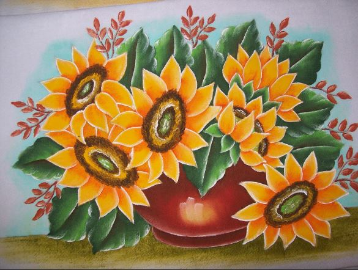

Cuadros abstractos

Características del producto
Desde obras de arte originales hasta impresiones enmarcadas, los cuadros pueden transformar una pared en blanco en un punto focal visualmente impactante. Disponibles en una amplia variedad de estilos, tamaños y temas, los cuadros decorativos ofrecen una forma fácil y efectiva de personalizar y embellecer cualquier ambiente.